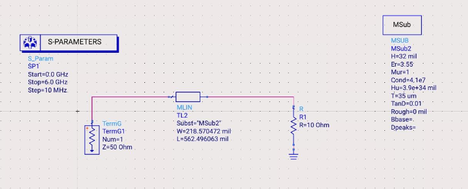
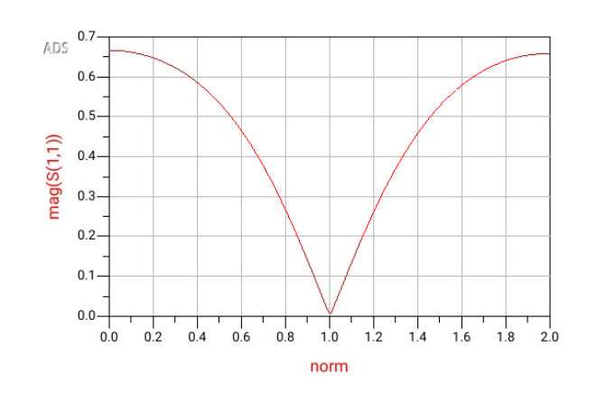
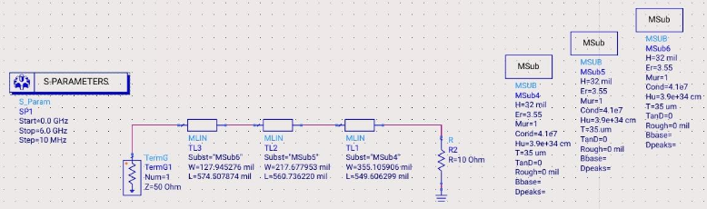
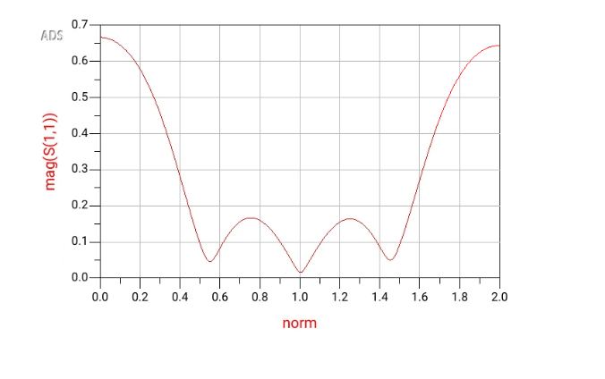
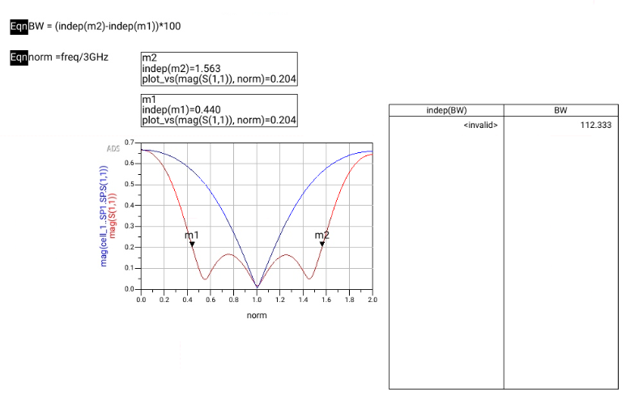
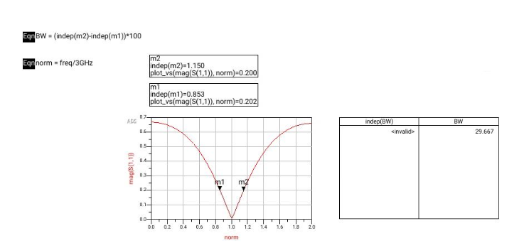

Microwave passive design project, designs and optimizes a broadband quarter-wave impedance transformer on microstrip, comparing a single-section baseline against a 3-section Chebyshev transformer. All microstrip lines use RO4003C high-frequency laminate (0.32″ substrate, εˇ = 3.55) with 1 oz (35 µm) copper cladding, designed in Keysight ADS with physical dimensions from LineCalc.
Transform a 50Ω source to a 10Ω load (5:1 impedance ratio) at f₀ = 3 GHz using microstrip quarter-wave sections. Compare a single-section transformer against a 3-section Chebyshev design to quantify the bandwidth improvement.

The single-section design uses one λ/4 microstrip section with characteristic impedance:
Z₁ = √(Zˆ · Zᴸ) = √(50 · 10) = 22.36 Ω
Physical dimensions (LineCalc, RO4003C, 3 GHz): W = 218.57 mil, L = 562.50 mil. Simulated bandwidth: 29.667%, consistent with Pozar’s theoretical prediction of 29%.

The 3-section Chebyshev transformer distributes the impedance transformation across three λ/4 sections, with each section impedance set via the geometric-mean staircase:
Z₃ = √(Zˆ · Z₂) = 14.95 Ω (final step) Z₂ = √(Zˆ · Zᴸ) = 22.36 Ω (middle) Z₁ = √(Z₂ · Zᴸ) = 33.44 Ω (first step)
After ADS optimizer sweep, the final optimized impedances converged to Z₁ = 33.4 Ω, Z₂ = 21.0 Ω, Z₃ = 13.9 Ω. Optimized bandwidth: 112.333%, nearly a 4× increase over the single-section design.




| Sections (N) | % Bandwidth | Z₁ (Ω) | Z₂ (Ω) | Z₃ (Ω) |
|---|---|---|---|---|
| 1 | 29.667% | 22.36 | — | — |
| 3 (optimized) | 112.333% | 33.4 | 21.0 | 13.9 |